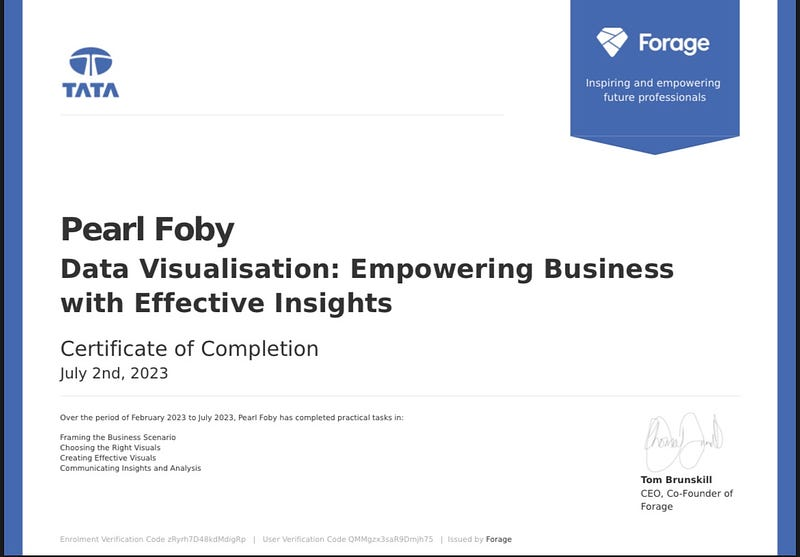

In this project, I looked at data from the stock market, particularly some technology stocks like Apple, Microsoft, Amazon and Google.
I performed a risk analysis on the stocks based on its previous performance history, checked the correlation between the stock prices and
predicted future stock prices through the bootstrap and Monte Carlo method.
The stock data used for this analysis was imported directly from the web(yfinance) a popular open source library to collect stock market data.


In this project, I performed an exploratory data analysis using Python on a bank customers data to gain insights on some of the primary factors that cause customers to leave i.e customers churn.

In this project, I carried out a detailed data cleaning and preparation on Nashville Housing Data gotten from Kaggle using the SQL Server, transforming it into a more usable information.

In this project, I perfromed an in-depth analysis on donors information for a fundraiser called "Education For All" inorder to help the stakeholders make data driven decisions about the charity on how to increase the number of donors, increase the donation frequency etc.

The purpose of this analysis was to shed more light on different Data related jobs salaries and how different criteria affect these job salaries such as experience level, geography, employment type, job type etc. The data was cleaned with Excel and analyzed with SQL.

This is a summary on the different tasks completed in the virtual internships I did which can be accessed on Forage. The internships include; Data Visualization: Empowering Business with Effective Insights by TATA Group and Data Analytics Consulting by KPMG. These internships had a profound impact on me, especially in enhancing my skills as a data analyst.

This consists of the different interactive dashboards for each projects to visualize key insights gotten from various datasets.